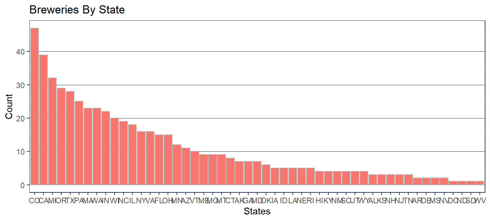
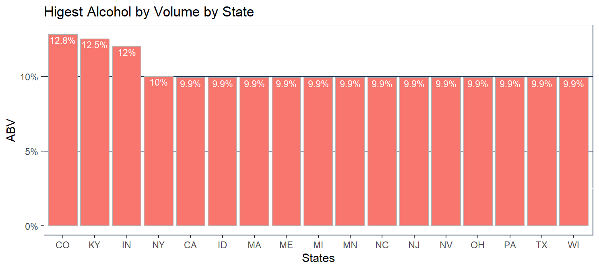
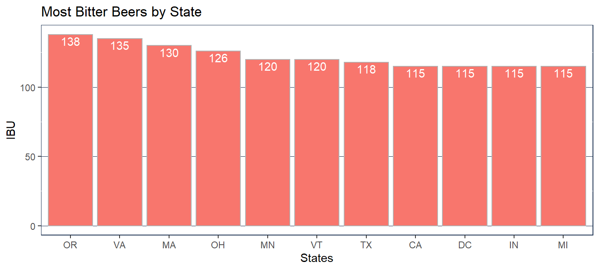
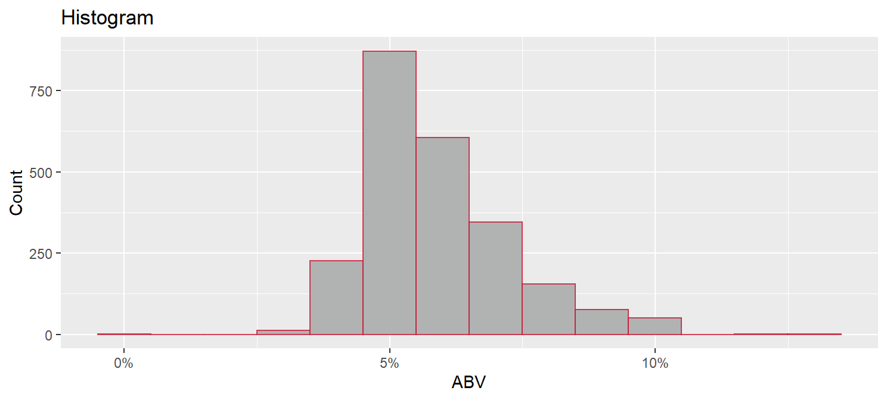
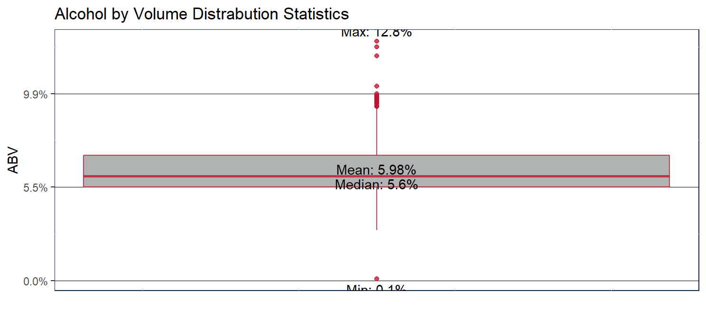
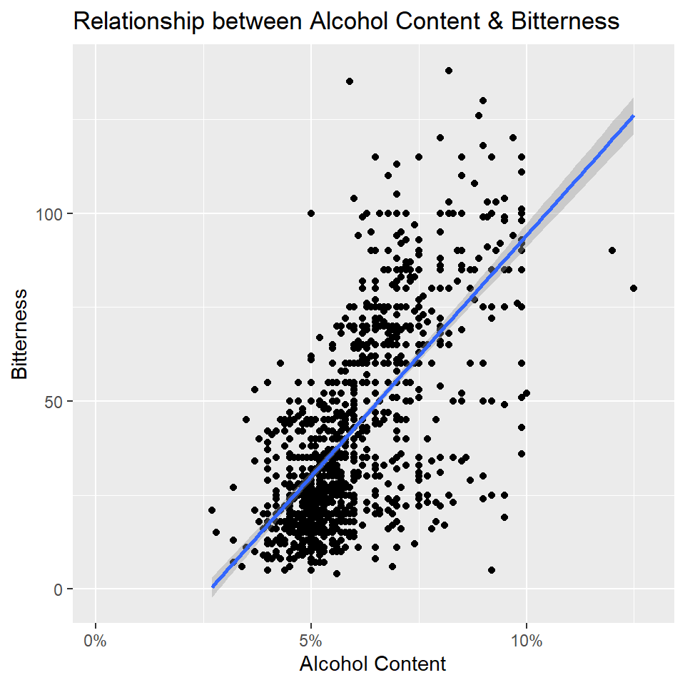
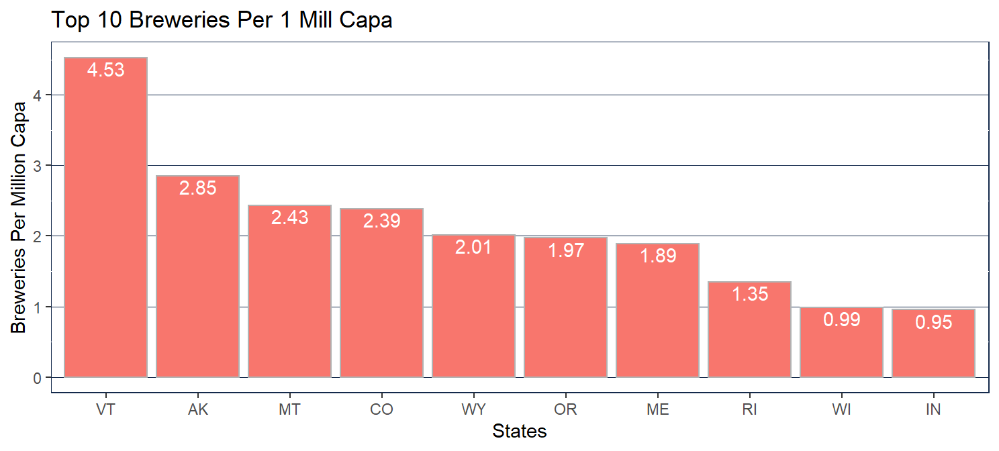
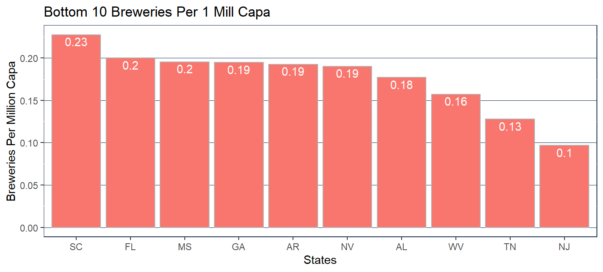

How many breweries are present in each state?
Using this bar chart we show the number of breweries in each state from the most breweries to the least per state.

Merge beer data with the breweries data. Print the first 6 observations and the last six observations to check the merged file.
Using the head function we show the first six observations and the last six observations.
## Name Beer_ID ABV IBU Brewery_id
## 1 Pub Beer 1436 0.050 NA 409
## 2 Devil's Cup 2265 0.066 NA 178
## 3 Rise of the Phoenix 2264 0.071 NA 178
## 4 Sinister 2263 0.090 NA 178
## 5 Sex and Candy 2262 0.075 NA 178
## 6 Black Exodus 2261 0.077 NA 178
## Style Ounces
## 1 American Pale Lager 12
## 2 American Pale Ale (APA) 12
## 3 American IPA 12
## 4 American Double / Imperial IPA 12
## 5 American IPA 12
## 6 Oatmeal Stout 12## Brew_ID Name City State
## 1 1 NorthGate Brewing Minneapolis MN
## 2 2 Against the Grain Brewery Louisville KY
## 3 3 Jack's Abby Craft Lagers Framingham MA
## 4 4 Mike Hess Brewing Company San Diego CA
## 5 5 Fort Point Beer Company San Francisco CA
## 6 6 COAST Brewing Company Charleston SC## Brewery_ID BreweryName City State BeerName Beer_ID
## 1 1 NorthGate Brewing Minneapolis MN Pumpion 2689
## 2 1 NorthGate Brewing Minneapolis MN Stronghold 2688
## 3 1 NorthGate Brewing Minneapolis MN Parapet ESB 2687
## 4 1 NorthGate Brewing Minneapolis MN Get Together 2692
## 5 1 NorthGate Brewing Minneapolis MN Maggie's Leap 2691
## 6 1 NorthGate Brewing Minneapolis MN Wall's End 2690
## ABV IBU Style Ounces
## 1 0.060 38 Pumpkin Ale 16
## 2 0.060 25 American Porter 16
## 3 0.056 47 Extra Special / Strong Bitter (ESB) 16
## 4 0.045 50 American IPA 16
## 5 0.049 26 Milk / Sweet Stout 16
## 6 0.048 19 English Brown Ale 16## Brewery_ID BreweryName City State
## 2405 556 Ukiah Brewing Company Ukiah CA
## 2406 557 Butternuts Beer and Ale Garrattsville NY
## 2407 557 Butternuts Beer and Ale Garrattsville NY
## 2408 557 Butternuts Beer and Ale Garrattsville NY
## 2409 557 Butternuts Beer and Ale Garrattsville NY
## 2410 558 Sleeping Lady Brewing Company Anchorage AK
## BeerName Beer_ID ABV IBU Style
## 2405 Pilsner Ukiah 98 0.055 NA German Pilsener
## 2406 Porkslap Pale Ale 49 0.043 NA American Pale Ale (APA)
## 2407 Snapperhead IPA 51 0.068 NA American IPA
## 2408 Moo Thunder Stout 50 0.049 NA Milk / Sweet Stout
## 2409 Heinnieweisse Weissebier 52 0.049 NA Hefeweizen
## 2410 Urban Wilderness Pale Ale 30 0.049 NA English Pale Ale
## Ounces
## 2405 12
## 2406 12
## 2407 12
## 2408 12
## 2409 12
## 2410 12Address the missing values in each column
We filtered the N/A’s out only when we did statistical calculations. We did not remove or delete any data for any other reason.
Compute the median alcohol content and international bitterness unit for each state. Plot a bar chart to compare.
Using the bar chart we were able to display the median ABV and IBU per state using an overlay of the two.
Which state has the maximum ABV beer?
Colorado has the highest ABV beer with a 12.8% alcohol beer

Which state has the maximum IBU beer?
Oregon has the beer with the highest IBU at 138

Comment on the summary statistics and distribution of the ABV variable
It appears the beer sweet spot is around 5.5% ABV as that’s the average mean of all beers in the data set. There are quite a few states that prefer a higher ABV and those typically have a higher number of breweries associated.

Is there an apparent relationship between the bitterness of the beer and its alcoholic content? Draw a scatter plot. Make your best judgement of a relationship and EXPLAIN your answer.
Yes, using the scatter plot we can see the higher the IBU (the more bitter) the beer the higher the ABV. The judgement can be made that the longer the hops are brewed the more bitter the beer. The end result also brings a higher alcohol content. Alcohol is could also be considered bitter so simply the higher the ABV the more bitter the beer due to the alcohol alone.

Budweiser would also like to investigate the difference with respect to IBU and ABV between IPA’s (Indian Pale Ales) and other types of Ale (any beer with “Ale” in its name other than IPA.) You decide to use KNN clustering to investigate this relationship. Provide statistical evidence one way or the other.
Using KNN we were able to predict with 83% success rate if a beer was an IPA or not. With IPA having a much higher alcohol content and higher IBU than traditional ale style beers we could predict the style of beer simply based on ABV and IBU.
## classifications
## IPA ALE
## IPA 83 19
## ALE 22 161## Confusion Matrix and Statistics
##
## classifications
## IPA ALE
## IPA 83 19
## ALE 22 161
##
## Accuracy : 0.8561
## 95% CI : (0.8099, 0.8947)
## No Information Rate : 0.6316
## P-Value [Acc > NIR] : <2e-16
##
## Kappa : 0.689
##
## Mcnemar's Test P-Value : 0.7548
##
## Sensitivity : 0.7905
## Specificity : 0.8944
## Pos Pred Value : 0.8137
## Neg Pred Value : 0.8798
## Prevalence : 0.3684
## Detection Rate : 0.2912
## Detection Prevalence : 0.3579
## Balanced Accuracy : 0.8425
##
## 'Positive' Class : IPA
## ## classifications
## IPA ALE
## IPA 83 19
## ALE 22 161## [1] 0.8561404## [1] 0.1438596## [1] 0.7904762## [1] 0.8944444Knock their socks off! Find one other useful inference from the data that you feel Budweiser may be able to find value in. you must convince them why it’s important and back up your conviction with appropriate statistical evidence.
In conclusion we suggest you sell new conceptual products to the states that have the most breweries per capita. Also, you should continue to do a hard push in the states that have the least amount of breweries per capita. Even possibly a new product with a lower ABV as it appears there is a market for a lower ABV product.
We would like to do more research on this with actual sales data to provide even more confirmation to where they should focus on new and existing products. Possibly partner with our distribution and retail chains for their beer year over year beer sales.
